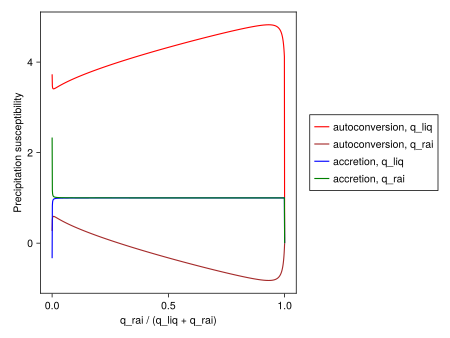

Precipitation Susceptibility
The PrecipitationSusceptibility.jl module contains functions for determining the precipitation susceptibility rates due to various processes for 2-moment microphysics schemes, as described in [52].
The precipitation susceptibility describes the rate of change of precipitation production due to some moment of the particle size distribution:
For some partial moment $X$, such as $q_{liq}$, $q_{rai}$, $N_{liq}$, or $N_{rai}$ and some process rate of precipitation production $r$, such as autoconversion, accretion, etc, this is defined as:
\[\frac{\partial \ln r}{\partial \ln X}\]
The total precipitation susceptibility, then, is
\[\frac{\partial \ln PP}{\partial \ln X} = \sum_{r \in R} \frac{r}{PP} \frac{\partial \ln r}{\partial \ln X}\]
Where $R$ is the set of all process rates that contribute to precipitation production.
Example reproducing Fig. 2 From [52]:
include("plots/PrecipitationSusceptibilityPlots.jl")CairoMakie.Screen{SVG}
